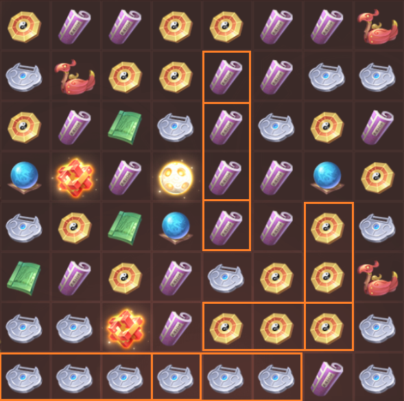
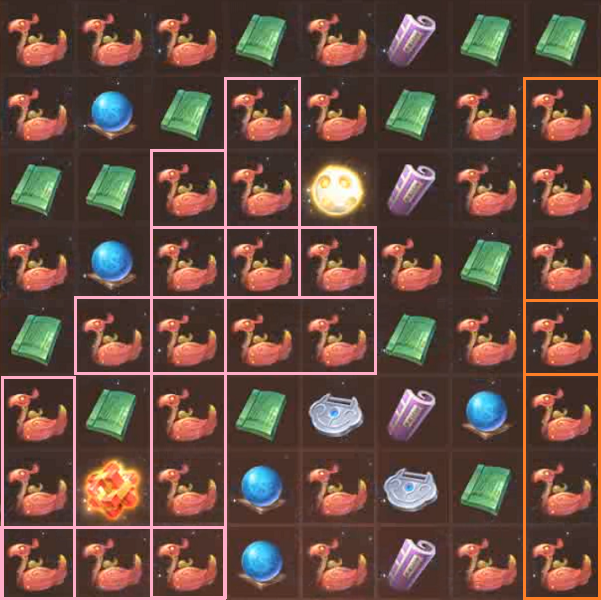
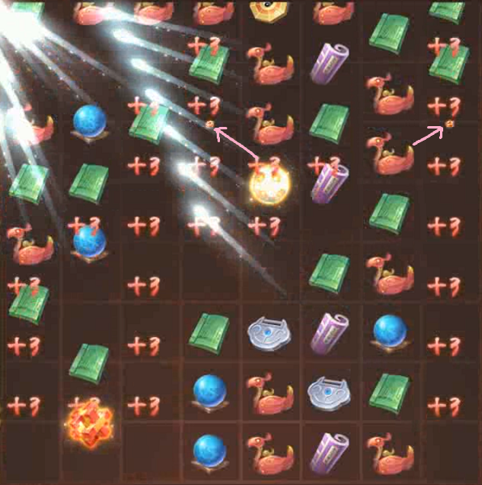

Where do Red Burrs appear?
When a Red Burr is created by a direct move (i.e. immediately after making a move), it will appear where you moved the burr to complete the 5x. When it is created by a combo (i.e. the moves that occur after your move, due to the holes created), it will appear in a different place.
To understand where it will appear, we need to define how a Red Burr is actually created.
Matches
A match is three or more of the same type of ball that are next to each other, either horizontally or vertically.

Chains
A chain is two or more matches that intersect on a single ball.
In this case, the golds form a chain because there are two matches on a single ball (the reversed L-shape).
The silvers do because, as a neighbouring four-match sharing a ball with a three-match, they intersect on a single ball.
The purples do not, because they intersect on two - the centre purples.
Red Burrs
A Red Burr is created when a chain is created. The typical explanation is "it's five in a row but can also be an L or a plus". This definition, however, doesn't suffice for chains that are made up of more than two matches.
For example, this is a board that came about by using a Switch Stone:

Going by the typical definition, you would expect many Red Burrs to be created. In reality, only two are, because there are only two chains here.
Where do Red Burrs appear?
For a given chain created by a combo, the Red Burr will appear at the highest ball of the entire chain. If there are many balls at the top, it will appear in the leftmost ball of that set.
Note: the "Red Burr appearing" animation plays while balls are falling, so it looks like it appears lower than it actually does.